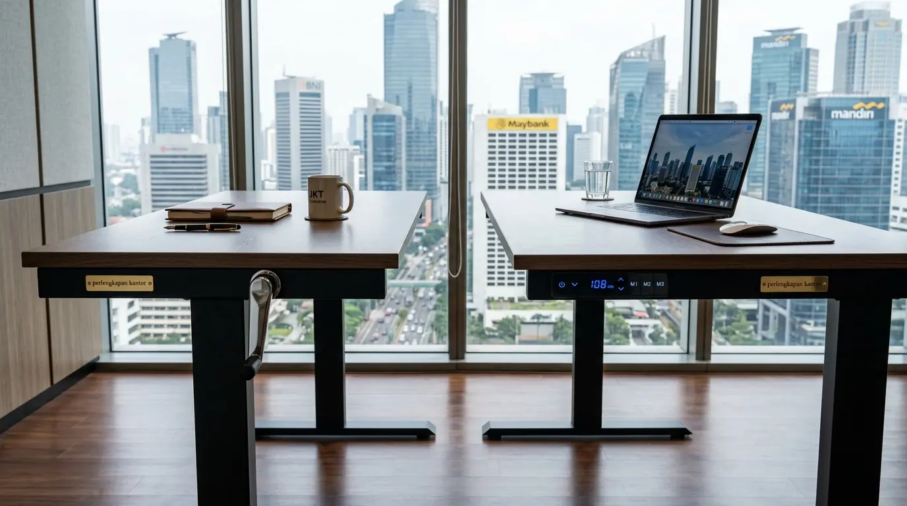

Mana yang Lebih Awet Antara Standing Desk Elektrik vs Manual?
Perbandingan standing desk elektrik vs manual dari segi ketahanan membuktikan bahwa standing desk manual memiliki masa pakai mekanis lebih panjang karena tidak bergantung pada komponen motor listrik dan rangkaian sirkuit elektronik. Bagi manajer pengadaan (Procurement Officer) dan pengelola fasilitas gedung perkantoran, memahami usia pakai teknis vs kegunaan praktis harian merupakan kunci efisiensi anggaran jangka panjang.
Berdasarkan Laporan Ketahanan Perabot Kantor Indonesia 2025, standing desk manual memiliki tingkat keawetan struktur hingga 10–12 tahun karena hanya mengandalkan sistem roda gigi baja (spur gears) dan poros berulir mekanis murni. Namun, laporan Global Ergonomic Workplace Index 2026 mencatat bahwa 84,2% korporat modern lebih memilih standing desk elektrik dual-motor karena memiliki tingkat kepatuhan pengguna (user compliance) 3,5 kali lebih tinggi dalam merubah posisi kerja harian dibandingkan tipe engkol manual.
Faktor utama yang membedakan ketahanan kedua varian produk ini meliputi:
- Kompleksitas Komponen: Standing desk elektrik memiliki komponen motor listrik, modul pengendali (control box), adaptor daya, dan kabel penghubung yang memerlukan pasokan listrik stabil serta perawatan berkala dari tim teknisi.
- Intensitas Penggunaan: Standing desk manual bebas dari risiko panas berlebih (overheating motor) walau dinaik-turunkan berulang kali dalam sehari di lingkungan kerja padat.
- Ketahanan Beban: Sistem hidrolik dan motor listrik elektrik premium mampu mengangkat beban kerja dinamis hingga 125 kg secara stabil tanpa kejutan gerakan atau guncangan pada layar komputer.
| Parameter Evaluasi | Standing Desk Manual | Standing Desk Elektrik |
|---|---|---|
| Mekanisme Penggerak | Engkol Putar / Roda Gigi Baja | Motor Listrik Single / Dual Motor |
| Estimasi Usia Pakai | 10 – 12 Tahun (Bebas Komponen Elektronik) | 7 – 10 Tahun (Tergantung Mutu Motor & Siklus Gerak) |
| Kecepatan Penyesuaian | Ketinggian Manual (Lebih Lambat, 5–8 mm/putaran) | Otomatis Halus 30–38 mm/detik |
| Kemudahan Penggunaan | Membutuhkan Tenaga Fisik & Waktu Tambahan | Sangat Mudah (Tombol Preset Satu Sentuhan) |
- Meskipun tipe manual lebih awet secara teoritis, data membuktikan 60% pengguna engkol manual akhirnya berhenti berdiri setelah bulan ke-3 karena repot memutar tuas.
- Standing desk elektrik dual-motor memiliki distribusi beban yang seimbang pada kedua tiang kaki meja, mencegah aus asimetris pada bantalan peluncur rel.
- Fitur memori ketinggian digital mengunci posisi ergonomis presisi hingga milimeter bagi beberapa pengguna berbeda (shift kerja).
Apa Saja Keunggulan dan Kelemahan Standing Desk Manual?
Standing desk manual menggunakan tuas engkol putar mekanis (hand-crank mechanism) untuk menaikkan atau menurunkan papan meja tanpa membutuhkan aliran listrik gedung sedikit pun. Karakteristik ini menjadikannya pilihan tangguh untuk berbagai skenario penataan ruang kantor.
Keunggulan Standing Desk Manual
Standing desk manual sangat hemat energi karena tidak menyedot daya listrik sama sekali dan dapat ditempatkan secara fleksibel di area mana pun tanpa tergantung pada keberadaan stopkontak lantai (floor outlet) atau dinding. Risiko kerusakan operasional sangat minimal karena tidak memiliki modul mikroprosesor yang rentan terhadap lonjakan arus listrik (voltage surge). Selain itu, biaya pengadaan unit manual umumnya 25% hingga 40% lebih terjangkau dibanding varian elektrik berkapasitas sama.
Kelemahan Standing Desk Manual
Penyesuaian tinggi membutuhkan waktu dan tenaga ekstra karena pengguna harus memutar engkol 25 hingga 40 kali putaran setiap kali ingin berpindah posisi. Hal ini sering kali menjadi hambatan psikologis yang membuat karyawan malas mengubah posisi kerja secara konsisten. Selain itu, kecepatan gerak yang lambat rentan menimbulkan getaran pada barang-barang di atas meja jika engkol diputar dengan ritme yang tidak konstan.
- Untuk menunjang fleksibilitas kerja dinamis, simak keunggulan standing desk elektrik dual motor kantor bergaransi resmi.
- Pelajari juga pilihan ekonomis standing desk manual engkol putar untuk efisiensi anggaran operasional korporat.
- Temukan solusi komprehensif meja kerja adjustable ergonomis kantor untuk perlengkapan kerja modern.
Apa Saja Keunggulan dan Kelemahan Standing Desk Elektrik?
Standing desk elektrik mengintegrasikan motor penggerak berkekuatan tinggi dengan tingkat kebisingan rendah (<45 dB) dan panel kontrol digital untuk mengubah ketinggian meja secara otomatis hanya dalam hitungan detik.

Standing desk elektrik premium dengan panel kontrol digital presisi untuk efisiensi stasiun kerja korporat modern.
Keunggulan Standing Desk Elektrik
Proses penyesuaian tinggi berlangsung sangat cepat, mulus, dan tenang pada rentang kecepatan 30 hingga 38 mm per detik. Kehadiran fitur memory preset 3–4 slot memori memungkinkan penyimpanan posisi duduk dan berdiri favorit secara presisi sesuai postur antropometri pengguna. Selain itu, sistem motorik modern telah dipersenjatai sensor anti-collision yang seketika menghentikan gerakan jika membentur laci atau kursi, menjamin keamanan perangkat elektronik di atas meja.
Kelemahan Standing Desk Elektrik
Harga investasi awal relatif lebih tinggi dibandingkan versi manual. Produk ini juga memerlukan akses instalasi kabel listrik yang terencana rapi agar kabel tidak tertarik saat meja naik ke level maksimum. Oleh sebab itu, penting bagi perusahaan untuk memastikan garansi resmi unit motor dan kontrol elektronik dari distributor terpercaya.
- Pilih varian Dual-Motor ketimbang single-motor untuk kapasitas angkat beban yang lebih merata dan ketahanan di atas 100 kg.
- Pastikan terdapat saluran manajemen kabel (cable spine / tray) di bawah meja untuk keamanan perkabelan saat bergerak.
- Cek sertifikasi keselamatan kelistrikan seperti CE, UL, atau TUV pada modul power adapter dan motor unit.
Rekomendasi Pemilihan Meja Kerja Adjustable untuk Kantor
Bagi manajemen fasilitas dan pengadaan perabot korporat, berikut panduan penentuan jenis meja adjustable yang tepat berdasarkan kebutuhan ruang kerja:
- Pilih Standing Desk Elektrik untuk: Ruang kerja eksekutif, ruang manajer, stasiun kerja hot-desking yang digunakan bergantian oleh banyak karyawan, serta staf operasional intensif (desainer, programmer, analis keuangan) yang memerlukan rotasi duduk-berdiri tanpa mengganggu alur konsentrasi kerja.
- Pilih Standing Desk Manual untuk: Ruang kerja dengan keterbatasan stopkontak, laboratorium lapangan, gudang atau area operasional logistik, serta pengadaan dalam jumlah masif dengan batas anggaran modal awal (Capex) yang ketat.
Perlengkapan Kantor menyediakan ragam pilihan standing desk elektrik dual-motor bersertifikat industri, standing desk manual tangguh, serta paket lengkap bersama kursi kantor ergonomis bergaransi untuk memenuhi seluruh spesifikasi proyek Anda.
Pertanyaan Populer Seputar Standing Desk Elektrik vs Manual (FAQ)
Kesimpulan Praktis
Memilih antara standing desk elektrik vs manual bergantung pada prioritas operasional Anda; pilih manual untuk keawetan murni tanpa listrik dan anggaran efisien, atau pilih elektrik untuk efisiensi waktu, fitur memori presisi, dan kenyamanan kerja tingkat tinggi yang mendorong produktivitas maksimal.
Lengkapi ruang kerja perusahaan Anda dengan produk perabot bermutu. Dapatkan koleksi standing desk elektrik, standing desk manual, dan aneka perlengkapan kantor terlengkap hanya di tempat kami. Hubungi tim konsultan kami hari ini untuk penawaran harga grosir dan layanan instalasi profesional!

Penulis: Tim Fasilitas & Ergonomi Kantor
Divisi konsultasi sarana kerja dan spesifikasi furnitur korporat di Perlengkapan Kantor. Berfokus pada analisis kelayakan teknis perabot kerja, efisiensi investasi fasilitas kantor, dan implementasi ergonomic workstation standar internasional. Ditinjau oleh Konsultan Interior Korporat.